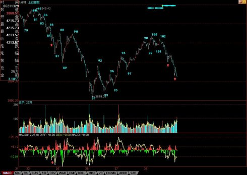

应酬前抓紧时间说两句。
震荡行情是最容易玩出利润来的，但这绝对不适合一根筋思维的人。大盘的中线走势，在前面6月4日的文章里已经明确说过“而5月初给出的技术面分析依然有效，目前这1/2线已经上移到4144点，深圳成分指数相应位置在13700点，能否最终有效站稳该线，是判断中期走势是否重新趋强的关键。在此之前，大盘走势将以震荡形式逐步消化技术面、政策面的压力。其中，目前在3600点附近的5月均线将是判断大盘是否正常调整的关键，只要该线不有效跌破，那么大盘的调整在正常的范围内，否则大盘的调整时间将大为增加。”本月的走势，基本就是在这5月均线与1/2线之间的震荡，而7月，这判断依然成立，但要密切注意突破的方向，因为7月时，5月均线将上移，空间压缩，最迟8月初就要选择突破方向了。之前，就是大玩震荡，狠拉狠砸，把利润给洗出来，把差价打出来。
今天的大盘，冲不破昨天给出的4131，调整就成了必然的。然后又跌破4025点，所以调整就加大了，这在盘中都很容易判断出来。实际操作，特别对待震荡行情，就是要敢卖敢买，该卖一定要卖，反而买却不一定，特别对技术有点问题的，仓位可以控制好。当然，技术没问题的，这里就是天堂，一定要记住本ID的多次忠告：股票都是废纸，只有能弄出差价来才是抽血，否则上涨下跌不过是坐电梯，和你有什么关系？而要弄差价，用中枢震荡的手法，就是最好的，这需要刻苦的学习和练习。
把图弄上来花了点时间，图中100的顶背驰都看不出来的，102的第二类卖点看不出的，都要抓紧学习。102后面的103在收盘时还没走完，要102走完，就是要出现线段里的底背驰。而下面箭头位置，就是大盘短线的压力所在，特别是最下面一个，必须站稳，否则大盘就是最弱走势，至少要等待出现1分钟以上级别的背驰才有介入价值。
忙，晚上又有应酬，下周才能回北京，季K线收得不会太好看了，这中线的大震荡延续时间不会短，学会震荡操作，将让你在这中线大调整中获利良多，好好学吧。
多说句废话，中国第一只在德国交易所交易的股票将在7月初挂牌，这是中国第一创投公司的杰作，7月底还有韩国交易所的第一只股票，这两枪打响后，估计私人股权投资要加温了。
先下，再见。

附录：
刚打开电脑，上来看看，发现有人对昨天的线段分法有疑问，这问题以前说过，就是关键是看你用多大的精确度。下图中，红箭头处是4022.69，绿箭头处是4022.42，按最严格的标准，精确到小数点后两位，这就没破坏原来的线段，所以就不是新的线段。当然，如果统一按个位数是精确度，直接取整，那么这就等于两处有重合，那按这标准，就可以定义为新线段（像下图一样）。但如果按四舍五入，那前面是4023，后面是4022，就不能这样定义了。
新线段的一个最重要标准就是一定要破坏老线段的结构，例如下跌的线段，后高点一定低于前低点。
为了照顾各位的习惯，也为了简单，以后就统一标准，用直接取整的办法来确认。所以，线段分类就可以改用下图了。
先下，下午收盘后见。